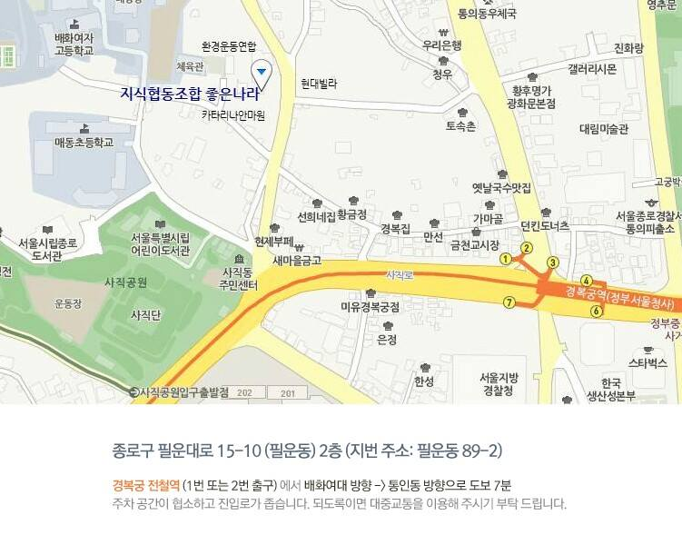

시민의 자발적 위험 제보 유무선 포탈 사이트를 개발 준비하고 있습니다.
세월호 참사로 부터 우리가 확실히 배운 것은 민초의 자발적 참여와 해결 노력없이는 우리의 안전을 지킬 수 없다는 것입니다.
그래서 사용자 측면에서 전국적인 시민안전감시 네트워크를 만드는 작업을 병행할 필요가 있습 니다.
1) (위험한) 특정 장소 - 도로, 건물, 설비 2) (위험한) 고착되어 있는 특정 물건 - 간판, 옥외광고물 3) (위험한) 이동 가능한 특정 물건 - 교통수단, 먹거리 4) (위험한) 특정한 사람 - 거동 수상자, 폭력 행사자, 도둑, 부정을 저지른 자 5) (위험한) 특정한 무형의 존재 - 각종 시스템 및 제도 6) (위험한) 특정한 상황 - 자연재해(태풍, 홍수, 해일, 폭설, 산사태, 지진 등), 인공재난(화재, 폭팔, 붕괴, 해상 침몰 등)
=====내용======
멤버인사 취지 소개 시민참여 안전감시네트워크 운영방향 토의 운영진 및 서울 지역 리더 선발 시민참여 안전감시 시스템 개발 방향 보고
====장소 및 시간 등==
장소: 지식협동조합 좋은나라 회의실 (약도첨부)서울 지하철3호선 경복궁역부근 http://www.kcgg.org/ 일시: 2014년 7월 4일 7시 참가대상: 전국의 그룹 멤버 누구나 참가비: 무료
여러분의 많은 관심과 참여 부탁드려요! 금주 금요일에 꼭 봐요 봐~요!! ☆금주 참가가 어려우신 분은 매주 전국을 순회할 예정이니 그때 뵈요! 전국 순회 일정은 금주말까지 올리겠습니다. 참여하실분 댓글 달아주세요. 전국의 모임이 예정되있으니 자기 지역에서 장소 추천해주실 분 추천해 주시면 감사하겠습니다.
o 역할 및 기능
o 홈페이지 >> https://www.safetyguard.kr/index.jsp
o 앱 >> https://play.google.com/store/apps/details?id=kr.co.nd.safetyguard&hl=ko
--o 역할 및 기능
안전불감증이 만연된 우리사회에 숨은 위험들을 찾아내고 안전문화와 안전의식을 일깨워 모두가 안전하고 행복하게 살 수 있는 사회를 만들고자 노력하는 공익법인입니다. 즉, 우리의 가족 생활을 안전하고 쾌적하게 하며, 건강한 인간 생활의 추구를 위하여 보다 나은 안전한 국민생활환경을 만들려고 하는 것입니다. 이를 통해 선진화된 안전문화를 정착시키고 국민의 안전에 대한 인식을 제고시켜 궁극적으로는 안전복지를 구현하고자 합니다. 각종 사고로부터 우리 모두가 최우선적으로 보호되며 국민이 안전하고 행복하게 살수 있도록 학술연구 프로그램 개발 및 보급, 실태조사, 교육 그리고 시민운동 등을 활발히 전개해 나가고 있습니다. 이러한 본 단체의 지속적인 생활 안전 향상을 위한 폭넓은 활동을 통해 시민들의 안전권익을 강화하는데 앞장서고 있습니다.o 홈페이지 >> http://www.safia.org/